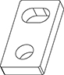

- 00000018WIA304D1130GYZ
- id_152710653.2
- Jul 8, 2024 2:44:59 PM
Bridge alignments, dock centering, and adjustments
Prerequisites
| Personnel requirements | |||
|---|---|---|---|
| Required persons | Preliminary requirements | Procedure | Finalization |
| 1 | - | 30 minutes | - |
| Tools and test equipment | |||
|---|---|---|---|
| Item | Quantity | Part number | Manufacturer |
| Flat-Blade Screwdriver | 1 | - | - |
| Straight Edge | 1 | - | - |
| Nonmagnetic Level | 1 | - | - |
| Nonmagnetic Titanium Service Tool Kit, Large Set | 1 | 5112581 | - |
| 5, 8, and 10 mm Allen Wrenches | 1 | - | - |
| Replacement parts | |||
|---|---|---|---|
| Item | Quantity | Part number | Manufacturer |
| Bridge connecting plate  | 2 | 5459031 | - |
| M10 x 25 mm Stainless Steel (SS) Socket-Head Allen Screws | 4 |
1000-M10C025-3 | - |
| M10 SS Washers | 4 |
2000-M10-1 | - |
| Consumables | |||
|---|---|---|---|
| Item | Quantity | Part number | Manufacturer |
| M10 x 25 mm Stainless Steel (SS) Socket-Head Allen Screws | 4 |
1000-M10C025-3 | - |
| M10 SS Washers | 4 |
2000-M10-1 | - |
| Required conditions |
|---|
| PET/MR Insert, Front and Rear End Bell installations must be completed before proceeding. Procedures found under Replacements > PET-MR. |
| LOTO should be applied to the RF Amplifier and PEN Cabinet. |
About this task
Overview
This procedure describes how to align the bridges, dock, and patient table on a SIGNA PET/MR System. Proper bridge alignment is critical to image quality and reliability of the table components.
Aligning the front bridge
Procedure
Aligning the rear bridge
Procedure
Dock adjustments
About this task
This procedure provides the longitudinal (in and out) and lateral (left to right) adjustments to center the dock. For proper patient table docking, the dock assembly must be adjusted to meet these criteria:
-
Gap between the patient table top and front of bridge magnet must be 1.22 in., ± 0.24 in. (31.0 mm, ± 6 mm). This ensures the gap is narrow enough to allow for smooth travel, but large enough to avoid rubbing on the covers or bridge, as well as avoid any pinch hazard. It also ensures the Low Profile Carriage Assembly (LPCA) hook can travel to its designated latch on the cradle.
-
Dock assembly must be square to the bridge, so the axis of cradle travel is the same for both the patient table and bridge.
-
Bosses of dock and patient table align to ensure proper rotary pump alignment.
Longitudinal adjustment
Procedure
- Dock the patient table.
- Measure the distance from the patient table top to the front bridge, which should be 1.22 in., ± 0.24 in. (31.0 mm, ± 6 mm). (Distance should be equal to each other so the patient table top is aligned with the bridge.)
- If adjustment is required, move the dock assembly either towards or away from the magnet, and re-measure until the proper gap is achieved.
Lateral adjustment
Procedure
- Use the table up (↑) pedal to raise the patient table to maximum height.
- Dock the patient table.
- Drive the cradle all the way into the magnet bore, and perform dock lateral adjustments until the vertical wheel tracks are aligned right and left.
- Align the patient table with the front bridge (left to right) using the vertical wheel tracks and the inner corner edges of the table and bridge as alignment points.